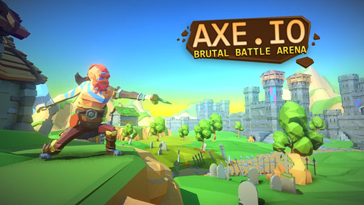
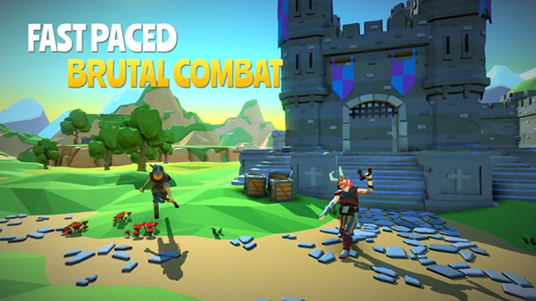
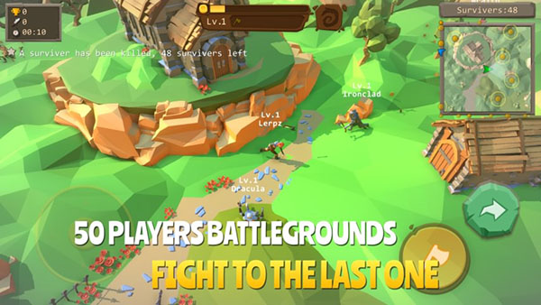

Introduction
Axe.io is a fast‑paced multiplayer .io arena where each player wields a single throwing axe and battles to dominate the leaderboard. Unlike most .io games that rely on endless grinding or auto‑attack mechanics, Axe.io forces you to aim manually and manage a limited energy bar, creating a tense, skill‑based showdown. The arena is compact, forcing frequent close‑quarters duels and quick decision‑making. The vibrant, minimalist graphics and smooth animations keep the action fluid, while the cross‑platform support lets you jump in on PC, tablet, or phone. The combination of precision throwing, energy management, and a constantly shifting leaderboard makes Axe.io an addictive, competitive experience that rewards both reflexes and tactics.
Getting Started

To jump into Axe.io, open the game in any modern browser and click Play. You’ll be placed in a short matchmaking queue, then spawn as a hovering axe in the arena. The core controls are simple: use WASD to glide your axe across the map, and left‑click (or tap on mobile) to throw it toward the cursor. Each throw consumes a small portion of your energy bar, displayed at the bottom of the screen; when energy runs low you can’t throw until it recharges after a brief pause. After a throw, your axe automatically returns, letting you chain attacks quickly. The UI shows your current kill count, the leaderboard on the right, and the remaining time. Choose a mode before starting: Classic (free‑for‑all), Team (co‑op vs AI or players), or Survival (shrinking safe zone). In any mode, your goal is to land as many hits as possible while avoiding being hit yourself, because a direct axe strike deals high damage and a brief stun.
Basic Tips
1. Master the map geometry – Most arenas have symmetrical lanes, low walls, and raised platforms. Spend the first 10 seconds of a match just moving around to memorize spawn points and high‑ground spots; for example, the central stone platform in the Classic map gives a clear view of the two side corridors. 2. Keep an eye on the energy bar – Each throw costs about 8% of your total energy. If you spam throws when the bar is near empty, you’ll be stuck in a 2‑second recovery, leaving you vulnerable. Wait for a quick 1‑second recharge before firing again. 3. Lead your target – Axes travel in a straight line at a fixed speed. When an opponent dashes, throw a little ahead of their movement; a perfect lead shot will hit even if they zigzag. 4. Stay moving – Standing still makes you an easy target. Use WASD to glide in short bursts, then stop just long enough to aim and throw, then repeat. 5. Use cover wisely – Low walls block axe flight but not the thrower’s line of sight. Peek around a corner, throw, then duck back to avoid return fire.
Advanced Strategies

1. Zone control with high‑ground – In Classic and Survival modes, occupying a raised platform forces opponents to either climb (which slows them) or retreat. By throwing axes from the high ground, you create a “kill zone” where enemies must pass through a narrow choke point. 2. Energy‑cycle timing – After a throw, your axe returns in roughly 0.6 seconds. Expert players fire as soon as the axe re‑enters the hitbox, then immediately dash to a safe spot. This “throw‑dash‑throw” loop maximizes damage while minimizing downtime. 3. Predict throw arcs – Experienced foes often telegraph a throw by briefly pausing. If you notice an opponent’s axe wobble before release, you can dodge left or right and counter‑attack in the same frame. 4. Team mode coordination – In Team Mode, assign one player as “shield” (constantly throwing to keep pressure) and another as “flanker” (moving behind the enemy line). Communicate the shield’s energy status so the flanker knows when to strike without retaliation.
Pro Tips

1. Use the “pre‑throw” stance – Before throwing, angle your axe slightly upward for a faster descent, letting you hit opponents who are ducking behind low walls. 2. Exploit the comeback mechanic – If you die early, respawn with a brief speed boost; use this to rush the current leader and surprise them while they’re reloading. 3. Master micro‑dodging – By tapping the movement keys in rapid succession, you can juke your hitbox without leaving your aim, forcing enemies to waste energy on missed throws. 4. Read the energy pool of multiple foes – When three or more players are battling, note each opponent’s bar simultaneously; strike the one with the lowest energy, as they cannot retaliate immediately.
Conclusion
Axe.io blends precise throwing mechanics, quick energy management, and ever‑changing arena combat into a uniquely addictive formula. Whether you prefer solitary Classic clashes, coordinated Team battles, or the tense survival of a shrinking map, the game offers endless replayability across all devices. Jump in, practice the basics, experiment with advanced tactics, and watch your rank climb. The arena awaits—grab your axe and start dominating today!